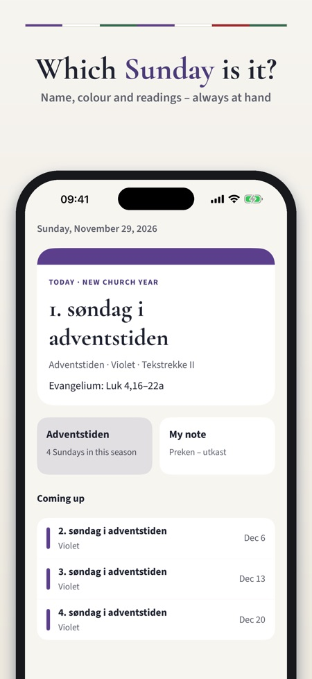
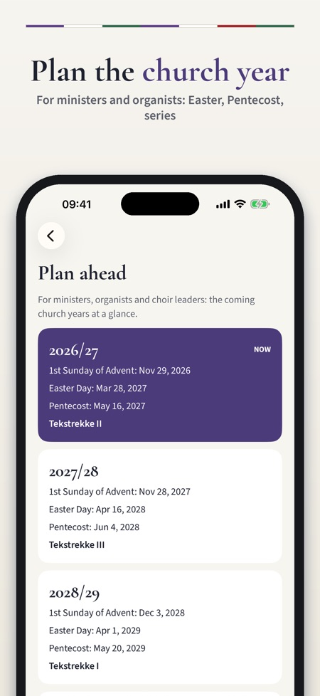
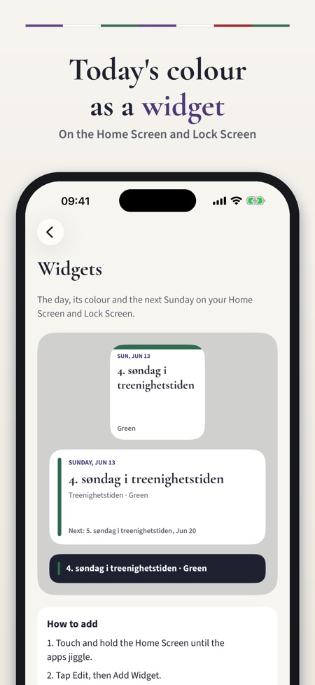

Lectionary, colours, Sundays. Which Sunday is it, which readings and which colour? The whole church year with the readings of the churches of Norway, Denmark and Finland – also as a widget.



Every Sunday, reading and liturgical colour of the Lutheran churches of Norway, Denmark and Finland – for ministers, organists, choir leaders, vergers and churchgoers. Which Sunday is it, which readings and which colour? Kirkeåret keeps the answer at hand.
TODAY
• The next Sunday or holy day with its name, liturgical colour and text series
• The gospel and the other readings as Bible references
• The coming Sundays and feasts
THE WHOLE CHURCH YEAR
• Every Sunday and holy day from the first Sunday of Advent to the last Sunday of the church year
• Grouped by season: Advent, Christmas, Epiphany, Lent, Easter and Pentecost
• Moveable days are calculated on the phone from the date of Easter – no internet needed
THE TEXT SERIES
• The three series of the Church of Norway, the two of the Church of Denmark and the three of the Church of Finland, with the series in use this year
• Look at the other series on every day
• Search for a day or a Bible book, and copy the references
PLAN AHEAD
• Several church years ahead: first Sunday of Advent, Easter, Pentecost and series
• Notes for every Sunday – sermon drafts, choir plans, reminders
• Saturday evening reminder: the Sunday's name, colour and gospel
• Widgets for the Home Screen and Lock Screen
• A share card with the day and its readings for the parish newsletter or social media
LEARN ABOUT THE CHURCH YEAR
• Short explanations of the seasons, the liturgical colours, the text series and the date of Easter
PURCHASE
Today's day, the calendar and the readings for the next 28 days work without a purchase. A one-time purchase unlocks the whole church year: the readings for every day, all series, future church years, notes and all widgets. The small widget and the Saturday reminder need no purchase. The purchase can be shared with your family (Family Sharing). No subscription, no ads, no sign-in.
The app is in English, Norwegian, Danish and Finnish and shows Bible references only, not Bible text. Kirkeåret is an independent app and is not made by or affiliated with any church.
PRIVACY
Notes are stored on the phone only. The app sends usage statistics without your name, e-mail or advertising ID through Google Analytics for Firebase (a random app ID; e.g. which screens and buttons are used, in-app purchases and the approximate country); you can switch this off in Settings.